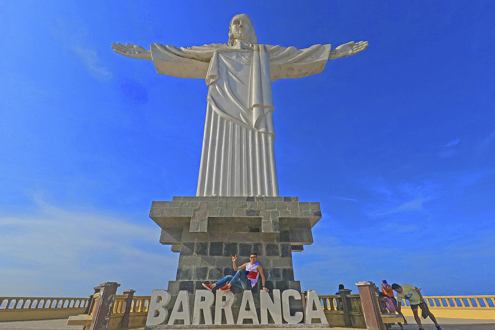
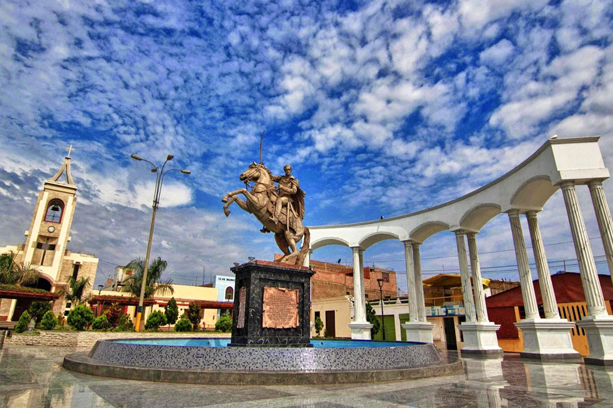
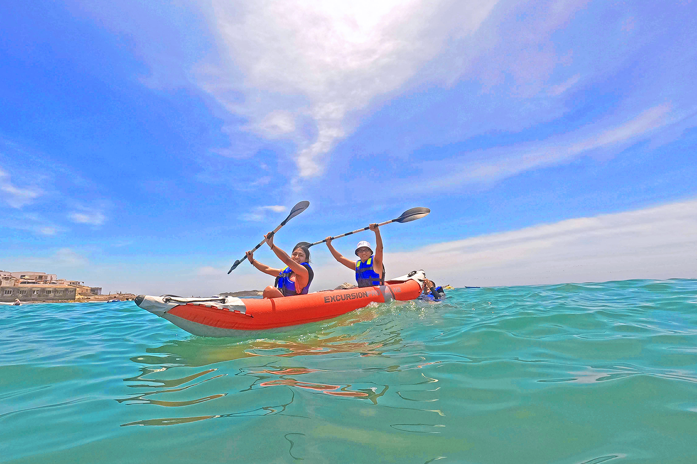
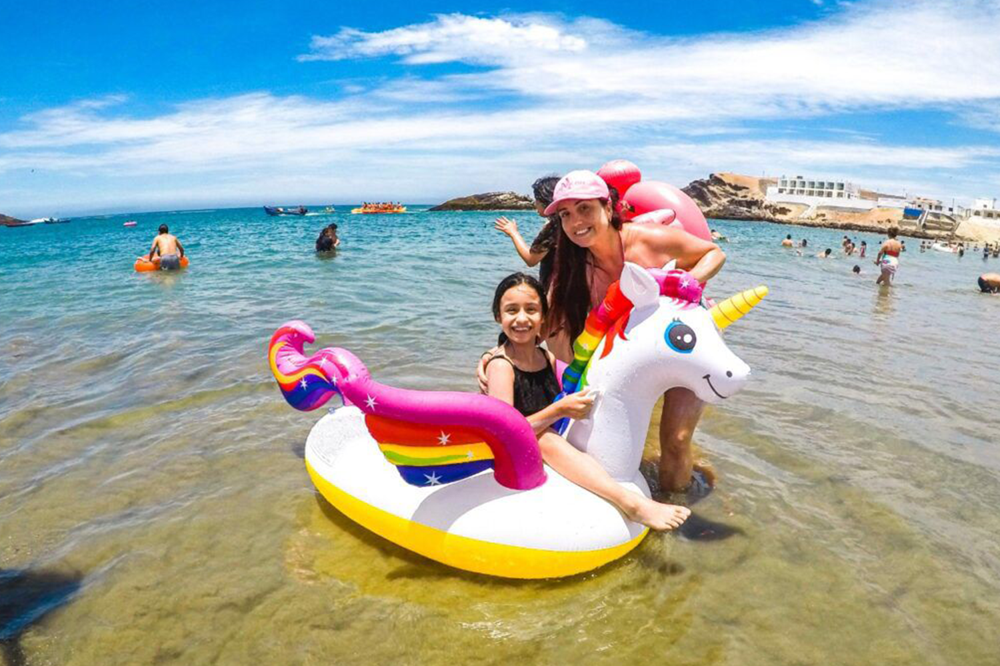
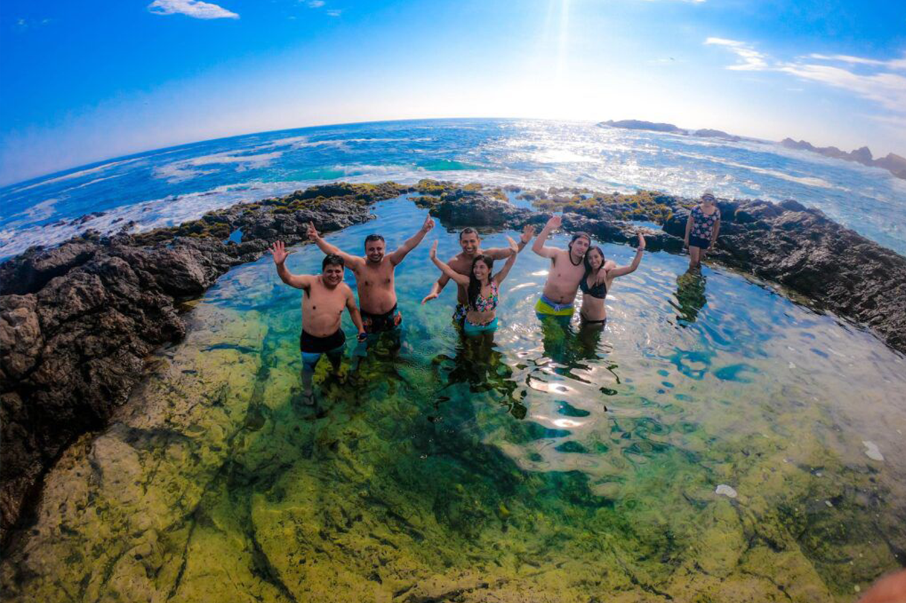
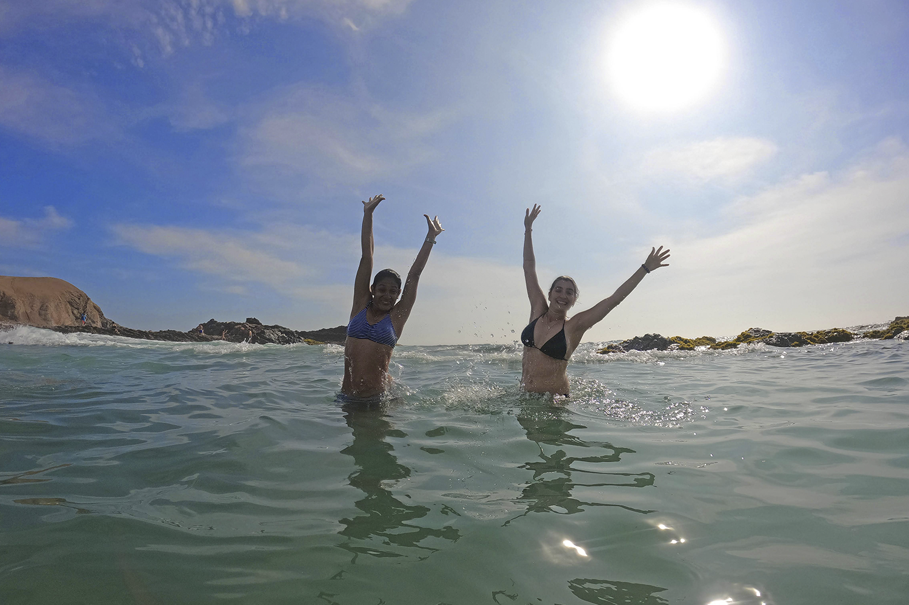

- ✅Tour Básico: S/ 99
- ✅Tour Básico para 2 personas a mas: S/ 95
- ✅Tour Básico reservado 7 dias anticipacion: S/ 89
- ✅Niños menores de 5 años no pagan, viajan totalmente gratis.
ITINERARIO
PUNTOS DE EMBARQUES
- 4:15 AM Centro Comercial La Rambla San Borja (Calle Ucello 162 – costado de Ripley) 10 minutos tolerancia.
- 4:50 AM C.Comercial Plaza Norte, altura de Av. Thomas Valle con Panamericana Norte, única puerta que da para la Av Panamericana norte.
- 5:10 AM C.C. Real plaza PRO / Paradero Tottus Puente Piedra.
1ra Parada
CRISTO DE BARRANCA: Como
primera parada visitaremos el
Cristo Blanco de Barranca, una
escultura impresionante y que
ofrece desde el lugar una vista
impresionante de las playas de la
zona.

2ra Parada
PATIVILCA: Arribo a Pativilca, haremos una breve parada en la plaza
principal donde conoceremos un
poco de su historia y tendremos
tiempo para tomar un desayuno
local. Luego partimos en direccíon
a Tuquillo, lugar donde tendremos
tiempo para playa

3ra Parada
PLAYA TUQUILLO: Siguiendo con nuestra excursion llegaremos a Playa
Tuquillo donde tendremos tiempo libre para disfrutar de esta hermosa
playa y sus alrededores, podran pedir los juegos inflables a su guia.
Tambien tendremos la opcion de poder reservar nuestros almuerzos para
que el guia les comunique una vez listo.

4ra Parada
PLAYA POCITAS: visitaremos playa
pozitas, para acceder a esta se
debe caminar aprox 5 minutos y se
recomineda tener aquashoes para
no lastimarse los pies. Esta playa
es famosa por sus aguas tranquilas en forma de piscina.

5ra Parada
Luego de disfrutar de unas horas de
playa ,y diversion, nos alistamos
para retornar a Lima ya que es un
retorno de 5 horas aproximadamente. A lima estamos llegando entre las
8 y 9 pm aproximadamente.

NUESTRO PROGRAMA INCLUYE:
- ✅Transporte turístico bioseguro ida y vuelta
- ✅Box Lunch a bordo (Galleta + jugo)
- ✅Visita El Cristo blanco de Barranca
- ✅Visita Mirador de Playas en Barranca
- ✅Visita la Plaza de Pativilca
- ✅Visita El arco de la amistad.
- ✅Visita la Estatua de Simon Bolivar
- ✅Visita a Playa Tuquillo
- ✅Visita Playa Pozitas - piscinas naturales
- ✅Raqueta de tennis para jugar
- ✅Juegos Inflables: Dona gigante
- ✅ tabla de surf y tableta de helado gigante.
- ✅Chaleco salvavidas para el grupo.
- ✅Cámara GO PRO para fotografias durante el recorrido.
- ✅Fotografias acuáticas.
- ✅01 botella de vino gratis al cumpleañero.
- ✅Gratis 1 vino a grupos de 4 personas a más.
- ✅Seguro contra accidentes SOAT.
- ✅Botiquín de primeros auxilios.
- ✅Sorteos y animación.
NO INCLUYE:
- Almuerzo / Gastos personales.
RETORNO:
Estaremos en lima entre 8:00 pm aprox.
***Fin de nuestros servicios***
Las actividades pueden variar su orden
¿COMO RESERVAR?
- 1 Solicitar Cuentas Bancarias
- 2 Puedes reservar con el 50% y lo restante se paga al subir al bus el día del Tour.
- 3 Enviarnos el comprobante y confirmar sus reservas con Nombres, N° DNI, C.E y número telefónico .
- 4 Solicita tu boleto de abordo digital
Estamos registrados en Ministerio de Comercio y Turismo del Perú MINCETUR único requisito para agencias de viajes formales y BIOSEGURAS.
REVISA NUESTROS TERMINOS Y CONDICIONES ⬇
LINK: "https://bit.ly/36cYjLF "
 Hola, ¿en que podemos ayudarle?
Hola, ¿en que podemos ayudarle?